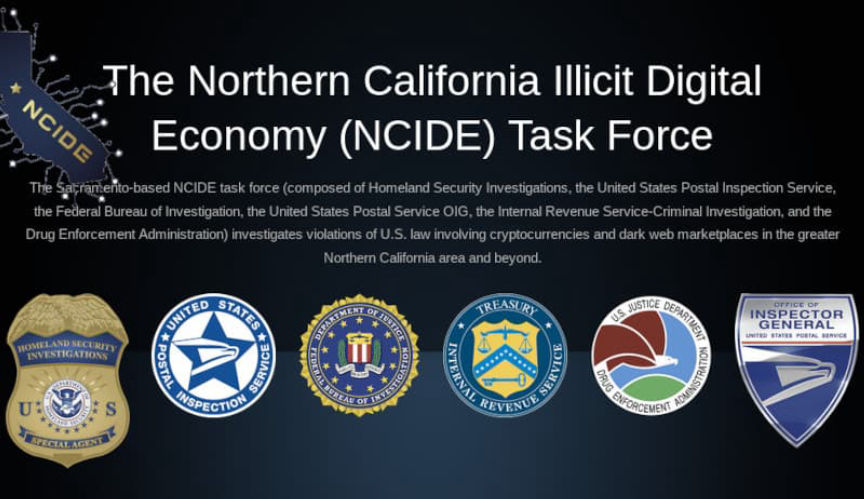
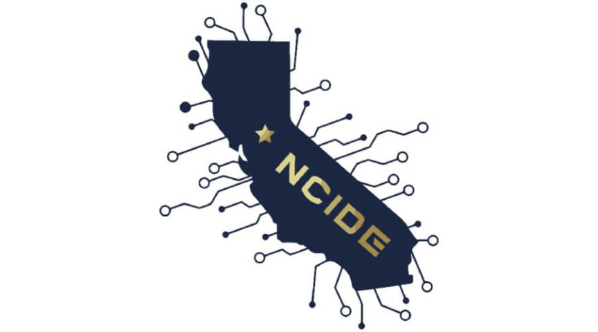
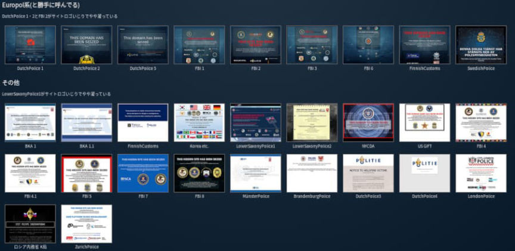

Extremely Online NCIDE Task Force Arrests More Vendors
~3 min read | Published on 2022-05-02, tagged General-News using 503 words.
The Northern California Illicit Digital Economy Task Force added more usernames to their list of arrested darkweb vendors.
The Northern California Illicit Digital Economy (NCIDE) Task Force, also known as the Narcotics and Economic Crime Investigations (NECI) Task Force, added usernames to the list of arrested darkweb vendors and overhauled their onion service.

The Northern California Illicit Digital Economy Task Force. Extremely online.
The Sacramento-based task force is (allegedly) responsible for several investigations into darkweb vendors that resulted in a conviction. In addition to finding ways to include the task force’s name in press releases, task force members dedicate resources to interacting with darkweb users on Dread, adding them through jabber, and regularly updating their official onion service.
None of the law enforcement “brands” involved in the cases we follow are as dedicated to maintaining their onion service as the NCIDE task force. I am surprised they are not maintaining an official presence on Twitter. At this rate, they are one step away from following Dark.Fail’s Onion Mirror Guidelines. (On that topic, the administrator of Dark.Direct suggested a modernization of the guidelines, which I think is overdue.)

NCIDE logo | reminds me of a millipede
Anyway, the task force’s list of arrested vendors has increased in length by a handful of names:[list]*Farmacy41*sicknessVersion2 a/k/a 23MightyMouse23*Houseofdank a/k/a BestBuyMeds a/k/a TrapMart*DankStix*BudgetBudsExpress*CokeWave*SafeDealsDirect*Cannabars a/k/a thefastplug*PhantomLabs*Diablow a/k/a raiseappeals a/k/a RaisedByDiablow*CaliCartel a/k/a Playground a/k/a GaminoCrimeFamily a/k/a DopeQueen*DrFrosty*guessguess*largomonkey a/k/a sillycoconut*Super_Shards*Gemstoned*TheCommission a/k/a TheCovenant*chlnsaint*CaliPlugMike a/k/a DatCubensisBoy a/k/a FantasticFungi*bossoftherock*igogrraawwr[/list]
The list should be considered with a grain of salt. In 2019, at least one “arrested vendor” still had control of their account. Certain usernames are no longer on the list. For example, a previous version of the list included “DrFrosty aka Bulletproof-Packs.” The “Bulletproof-Packs” monicker is no longer on the list. Many of the cases appear to be Operation Dark Gold cases (an “investigative team in the Northern District of California” [em]was[/em] credited in the Dark Gold presser, however). There are other oddities, such as the alleged arrest of the vendor “guessguess” who law enforcement in the Netherlands investigated in 2017 (and had access to the vendor’s marketplace profiles).
The onion service no longer has a section for “identified vendors” but it does include a section for joint investigations involving the task force:[list]*DarkNetAlchemist*ClickNShip*Easyscore*IcyDicy*GuttaPak*arctic*BM182318*RaveMart*bighorndodge*Blue30s*DarkMarket - darkevuygggqkqhq.onion[/list]
Do these internet police have a style guide for their websites and seizure banners? The seizure banner library (tor) on 淡路島 (Awaji Island per Deep L) provides some examples of the consistent theme often used by law enforcement agencies in the United States as well as their international branches.

Some of the banners viewable at 淡路島
Also, the NCIDETF should add case numbers to the list of arrests. Or literally any way to verify the entries on the list. As it stands, maybe half the cases are verifiable. They have no reason not to simply add fictional vendors to the list. The existence of the onion service is all part of an op. anyway. Even if someone noticed the lies, the task force would not face any repercussions. “Oh, you don’t know the vendor. They went to a different school.”